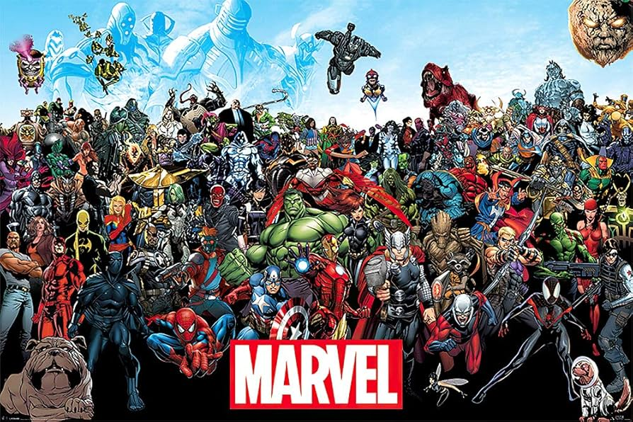

Marvel
Marvel Cinematic Universe
The Marvel Cinematic Universe (MCU) is an American media franchise and shared universe centered on a series of superhero films produced by Marvel Studios. The films are based on characters that appear in American comic books published by Marvel Comics. The franchise also includes several television series, short films, digital series, and literature. The shared universe, much like the original Marvel Universe in comic books, was established by crossing over common plot elements, settings, cast, and characters. Marvel Studios releases its films in groups called "Phases", with the first three phases collectively known as "The Infinity Saga" and the following three phases as "The Multiverse Saga". The first MCU film, Iron Man (2008), began Phase One, which culminated in the 2012 crossover film The Avengers. Phase Two began with Iron Man 3 (2013) and concluded with Ant-Man (2015), while Phase Three began with Captain America: Civil War (2016) and concluded with Spider-Man: Far From Home (2019). Black Widow (2021) is the first film in Phase Four, which concluded with Black Panther: Wakanda Forever (2022), while Phase Five began with Ant-Man and the Wasp: Quantumania (2023) and concluded with Thunderbolts* (2025). Phase Six began with The Fantastic Four: First Steps (2025) and will conclude with Avengers: Secret Wars (2027). Marvel Television expanded the universe to network television with Agents of S.H.I.E.L.D. on ABC in 2013 before further expanding to streaming television on Netflix and Hulu and to cable television on Freeform. They also produced the digital series Agents of S.H.I.E.L.D.: Slingshot (2016). Marvel Studios began producing their own television series for streaming on Disney+, starting with WandaVision in 2021 as the beginning of Phase Four. That phase also saw the studio expand to television specials, known as Marvel Studios Special Presentations, starting with Werewolf by Night (2022). The MCU includes various tie-in comics published by Marvel Comics, a series of direct-to-video short films called Marvel One-Shots from 2011 to 2014, and viral marketing campaigns for some films featuring the faux news programs WHIH Newsfront (2015–16) and The Daily Bugle (2019–2022). The franchise has been commercially successful, becoming one of the highest-grossing media franchises of all time, and it has received generally positive reviews from critics. However, many of the Multiverse Saga projects performed below expectations and struggled compared to those of the Infinity Saga. The studio has attributed this to the increased amount of content produced after the 2019 film Avengers: Endgame, and as of 2024, began decreasing its content output. The MCU has inspired other film and television studios to attempt similar shared universes and has also inspired several themed attractions, an art exhibit, television specials, literary material, multiple tie-in video games, and commercials.
Fictional universe
Timeline
The fictional timeline of the MCU includes the feature films, television series, television specials, short films, and the I Am Groot shorts from Marvel Studios and Marvel Television's Netflix series. While the early films of Phase One and Phase Two of the franchise followed each other in the timeline similar to their release order, Phase Three saw many of the films overlapping with each other in the timeline, while also introducing the first prequel property, Captain Marvel. The Phase Three film Avengers: Endgame featured characters traveling into the past and introduced a five-year time jump, with many subsequent releases in Phase Four and Phase Five set after Endgame's events in the timeline. The television series Loki and What If...? were the first properties to occur outside of the main timeline and explore alternative timelines and universes. There have been numerous attempts by Marvel Studios and others to codify the events of the MCU, which have been subject to perceived continuity errors, resulting in Marvel Studios releasing an official timeline book in 2023 for their first four phases that were designated as part of their "Sacred Timeline". This book did not feature projects produced by other companies, such as Marvel Television's series which all had been loosely connected to the films, however, it was noted all of these outside projects were part of the larger Marvel canon. In early 2024, Marvel Studios formally integrated Marvel Television's group of Netflix series into their Disney+ timeline. As of the Phase Five television series Daredevil: Born Again and the film Thunderbolts*, the "present day" in the MCU is 2027. The following covers and discusses MCU media released by Marvel Studios and the Netflix series by Marvel Television. Loki and What If...? are excluded from the diagram because they occur outside of the main timeline. Werewolf by Night is also excluded given the special explicitly does not indicate where it takes place in the MCU. Disney+'s timeline order places the first seasons of Loki and What If...? between Avengers: Endgame and WandaVision, their second seasons after The Marvels, and Werewolf by Night after Thor: Love and Thunder; Werewolf by Night is also placed here in The Marvel Cinematic Universe: An Official Timeline.